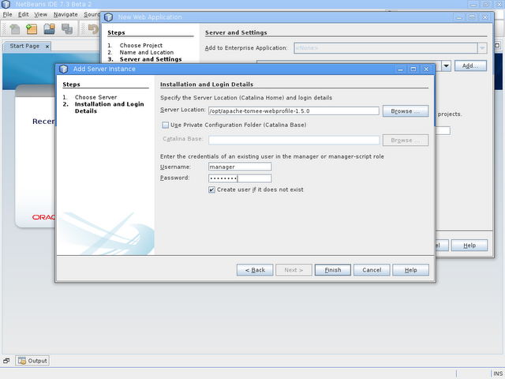
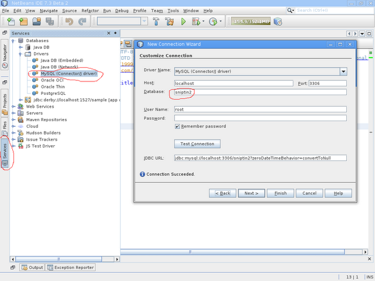
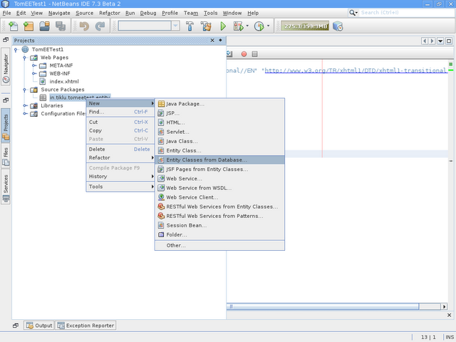
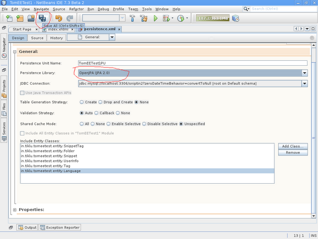

Netbeans and TomEE works great together. You can infact add TomEE as an Apache Tomcat server in Netbeans by following the simple steps given below.
Lets assume that you have already downloaded TomEE and you have NetBeans already setup.So to begin lets just create a Java Web project in NetBeans (Assuming you have basic working knowledge with NetBeans and you know how to create and run a web project in NetBeans). In the server screen we can add TomEE like the given screenshot below.

Now hit next. In the next step you need to select the folder where the TomEE server is present.

As soon as you hit finish your work is done. NetBeans would add the manager user in the tomcat server and also you will get back to the project creation window. Continue to the step for choosing your favorite web framework and complete the project creation process. Once the project is created just run it once to see if everything is fine.
Working with OpenJPA in Netbeans
Let us move to the point where we will do the more interesting part. We will configure OpenJPA in Netbeans so that the netbeans Entity generator can nicely work work OpenJPA and TomEE. So to do that you need to first create a connection to a database. Lets assume that we create one for MySQL server as shown in the screenshot below.

So once this connection is there we are ready to create Entity classes from the selected database. To do that follow the menu as shown in the screenshot below. 
Once you select "Entity Classes from Database" You will be presented with the follow dialog

In this dialog first of all we would select the connection that we created before from the top dropdown. Once you select the connection Netbeans would bring all the tables in "Available Tables" list. You can hit "Add All" to select all tables for entity class generation. Now lets hit "Next" and go to the next screen. And then again hit next and in the next screen hit finish. You can accept all the defaults that are given by the system and finish the Entity creation wizard. With this you are done creating the entities. But as soon as you are done creating the entities You will get a failed message from TomEE server (In case your TomEE server is running). This is because by default Netbeans generate Entity classes using Eclipselink which is not present in TomEE. So to make everybody happy. Next we will configure OpenJPA. To do that you need to open the persistence.xml file from the project (Project explorer -> double click on persistence.xml). This would open the persistence.xml editor window. As shown below

Now in this window we will select "New Persistence Library" option from the Persistence Library dropdown. This will open the following dialog box.

Here you need to choose the following two jar files from the TomEE installation folder - javaee-api-6.0-4-tomcat.jar and openjpa-asm-shaded-2.2.0.jar. Do make sure that you are choosing the jar files from the same location where your TomEE server is. Once you choose the proper libraries hit Ok to close the dialog and go back to the persistence.xml editor screen of netbeans.

Now here from the persistence library choose OpenJPA and save the file as shown in the above screenshot. Now just restart the server once and you are all set to run TomEE with JPA.
Do remember you may need to set your tomcat server in development mode so that your app gets deployed live. to do that you can follow the instructions given in the JSP hot deployment section following link